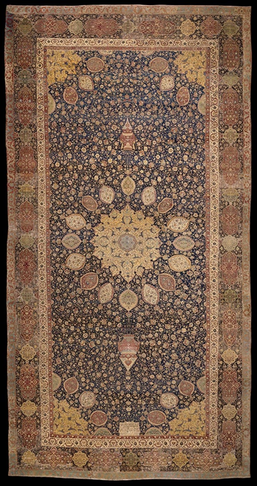

صورت مسئله
نمایش فرش اردبیل
بارگذاری تصویر دلخواه
تصویر فقط در مرورگر شما خوانده میشود و جایی ارسال نمیشود.
ترسیم پاسخ
● زنده

The Ardabil Carpet, unknown, 1539–1540, Iran. Museum no. 272-1893. © Victoria and Albert Museum, London